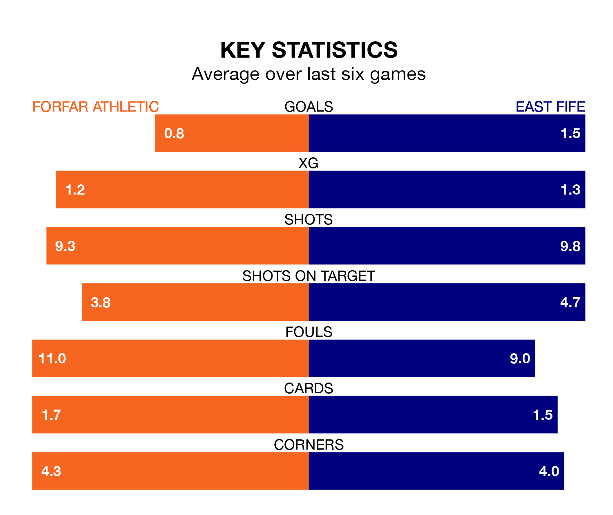

Forfar Athletic welcome East Fife to Station Park on Saturday looking to pick up points to end their three-game losing streak.
Forfar's struggles have left them with five points from their last six League Two matches, while their opponents have earned 11 from a possible 18.
With Marc McCallum between the sticks, Forfar can rely on one of the league's safest pair of hands. He has kept 10 clean sheets in his 33 appearances this season, and only one other 'keeper – Stenhousemuir's Darren Jamieson – has been able to prevent the opposition scoring on more occasions in League Two.
In East Fife's net, Allan Fleming has nine clean sheets in 33 games. He has conceded a goal every 74 minutes, only slightly more often than the 76 minutes between goals for McCallum.
In the last 10 years, Forfar and East Fife have played each other on 24 occasions. Forfar won seven of them, East Fife 13, and they drew four times.
On average, the Loons scored 1.1 goals and the Fifers 1.4 in those matches.
Their last meeting was on February 24, when they played out a 1-1 draw.
With 34 goals in 33 games so far this season, Athletic are the league's second-lowest scorers with 1.0 goals per game. But they are conceding fewer than average too, letting in 40 goals at a rate of 1.2 per game.
The Fifers, meanwhile, are average scorers, with 1.3 goals per game. They have also conceded 1.3 goals per game.
The Loons are seventh in the table after 33 games, of which they have won seven and drawn 15, earning 36 points.
The visitors are two places ahead of the home team in fifth, with 11 wins and 11 draws putting them on 44 points.
Forfar's last match was on April 13, a 2-1 loss against Peterhead, with Daniel Scally getting the goal for the Loons.
East Fife lost 4-1 against Bonnyrigg Rose Athletic last time out, also on April 13, with Alan Trouten on the scoresheet.
Saturday's match will be refereed by Peter Stuart, who has taken charge of three League Two games so far this season, issuing no red cards and booking eight players. He has awarded one penalty.
The last Forfar game Stuart refereed was a 1-0 home win against Spartans on February 3. His last East Fife match was their 1-0 loss away at Dumbarton on September 2.
Updated: 15:40 (UTC), 18/04/24